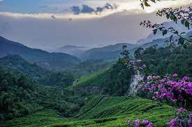
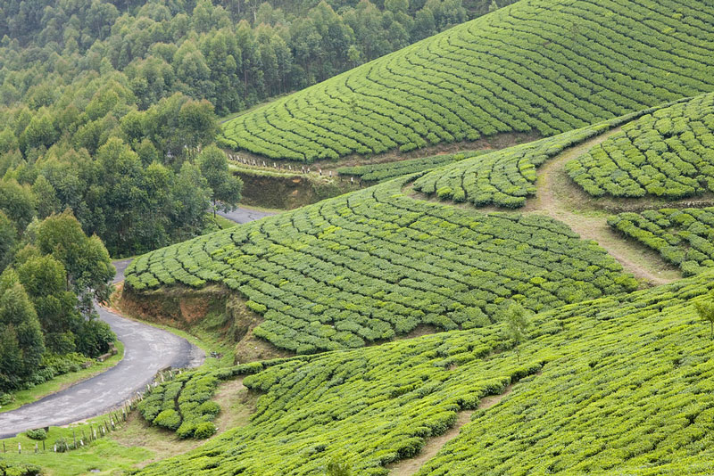

TOP DESTINATIONS
-

Anamudi
Anamudi is a mountain located in Idukki districts of the Indian state of Kerala. It is the highest peak in the Western Ghats and in South India, at an elevation of 2,695 metres and a topographic prominence of 2,479 metres. It lies on the border of Idukki district. The name Anamudi literally translates to "elephant's head" a reference to the resemblance of the mountain to an elephant's head. Anamudi is the highest mountain in peninsular India as well as the largest mountain in Kerala. Meanwhile, the highest independent mountain in Kerala is the Cheriyam mountain in Malappuram district. Cheriyam mountain is located at an elevation of 613 m above sea level. The first recorded ascent of Anamudi was by General Douglas Hamilton of the Madras Army on 4 May 1862, but it is likely that there had been earlier ascents by local people.
-

Idukki Dam
The Idukki Dam is a double curvature Arch dam constructed across the Periyar River in a narrow gorge between two granite hills locally known as Kuravan and Kurathi in Mariyapuram village in Idukki District in Kerala, India. At 168.91 metres, it is one of the highest arch dams in Asia. It is constructed and owned by the Kerala State Electricity Board. It supports a 780 MW hydroelectric power station in Moolamattom, which started generating power on 4 October 1975. The dam type is a concrete, double curvature parabolic, thin arc dam.The Indo-Canadian project was inaugurated by the Prime Minister Indira Gandhi on February 17, 1976. This dam was constructed along with two other dams at Cheruthoni and Kulamavu.
-

Poothamedu
At a distance of 3 km from Munnar Bus Station, Pothamedu Viewpoint is a spectacular vantage point situated on Bisonvalley road in Munnar.
-

Munnar
Munnar rises as three mountain streams merge - Mudrapuzha, Nallathanni and Kundala. 1,600 m above sea level, this hill station was once the summer resort of the erstwhile British Government in South India. One of the most sought after honeymoon destinations in Kerala, Munnar is replete with resorts and logding facilities that fit a wide rage of budgets. Sprawling tea plantations, picturesque towns, winding lanes and holiday facilities make this a popular resort town. Among the exotic flora found in the forests and grasslands here is the Neelakurinji. This flower which bathes the hills in blue once in every twelve years, will bloom next in 2030. Munnar also has the highest peak in South India, Anamudi, which towers over 2,695 m.
-

Meeshapulimala
Situated 1600 m above sea level, Munnar was a popular retreat for the British. It has now evolved into a proper tourist town with a number of resorts, hotels and restaurants coming up in the area. It is also famous for the special Neelakurinji flower that blooms here every 12 years. The hills turn blue and nature lovers come in large numbers to view this natural phenomenon in person. Munnar gives ample trekking options to enthusiastic guests.